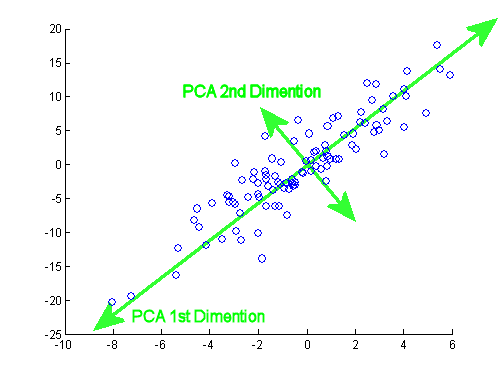
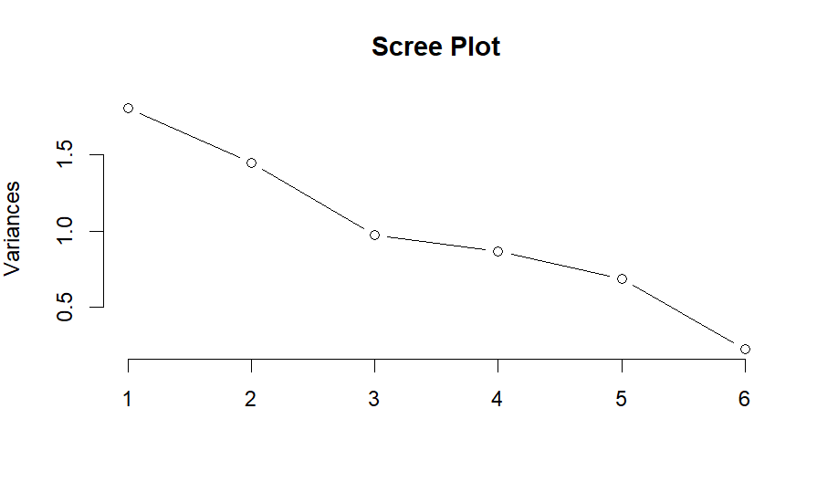
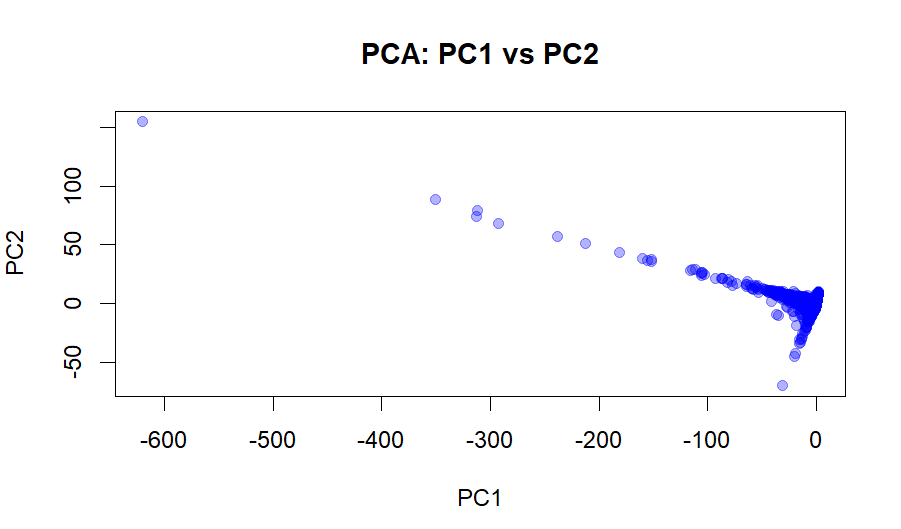

Principal Component Analysis (PCA) is a dimensionality reduction technique that transforms high-dimensional data into a smaller set of uncorrelated variables called principal components. These principal components are ordered according to the amount of variance they explain within the dataset, with the first principal component capturing the greatest variance and each subsequent component capturing the maximum remaining variance while remaining orthogonal to the previous components (Fig. 1).

PCA relies on eigenvalues and eigenvectors of the covariance matrix. An eigenvector represents a direction in feature space along which the data exhibits variation, while its corresponding eigenvalue quantifies the magnitude of variance explained in that direction (Fig. 2). PCA identifies the eigenvectors associated with the largest eigenvalues and uses them to construct a new coordinate system for the data. The first principal component corresponds to the eigenvector with the largest eigenvalue, the second principal component corresponds to the eigenvector with the second-largest eigenvalue, and so forth.
We also discuss Singular Value Decomposition (SVD), a computational method used to efficiently compute PCA. SVD factorizes the data matrix into orthogonal components and is the preferred method for large datasets.

PCA requires numeric variables. From the biomedical subset of the Semantic Scholar dataset, we selected the following quantitative features:
These variables were standardized (mean = 0, variance = 1) before PCA to ensure that features on larger scales (e.g., citation counts) did not dominate the analysis.

Dataset link: biomed_clean.csv
Below is the code used to perform PCA using R. Full scripts are available in the
code/ folder.
The PCA results provide insight into the major sources of variation in the biomedical publication dataset. The scree plot below shows that the first two principal components explain the majority of the variance. PC1 captures differences primarily related to citation behavior (citation count, influential citations, and reference count), while PC2 captures variation related to publication characteristics such as year, number of authors, and title length.

The scree plot displays a clear “elbow” after the second component, indicating that PC1 and PC2 capture the most meaningful structure in the data. Subsequent components contribute relatively little additional variance.

The PC1 vs PC2 scatterplot shows how individual papers are distributed along the two strongest dimensions of variation. Papers spread diagonally across the plot, suggesting that citation-related features and publication-related features are partially correlated but still capture distinct patterns. Most papers cluster near the origin, indicating similar citation and authorship characteristics, while a long tail along PC1 reflects a small number of highly cited or highly referenced papers.
PCA revealed that the biomedical publication dataset is driven primarily by two major factors: scholarly impact (citations and references) and publication characteristics (authorship and year). Dimensionality reduction allowed us to visualize these patterns clearly and provided a compact representation of the dataset for downstream clustering. By reducing six correlated variables into two principal components, PCA simplified the structure of the data while preserving the most important sources of variation.